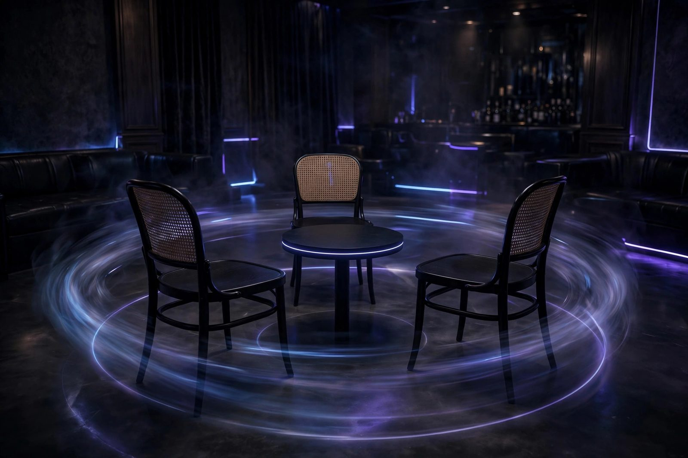

The 3 Questions That Work for Any Monologue
Every pretending-to-listen strategy eventually hits the same wall: your kid stops talking and looks at you expectantly. The mmhmm has run dry, the nod is exhausted, and silence is no longer an option. You need words. Specifically, you need words that sound engaged, work on any scene whatsoever, and cannot be answered with a single syllable. You need the three universal questions. Memorize them. They are your fire escape.
Question 1: "And then what happened?"
The infinite loop machine. Four words that hand the talking stick right back and buy you the length of whatever comes next. It works on tragedies, comedies, historical pieces, and improvised scenes about a sandwich. It works because it flatters: it implies the story was so gripping you need the next installment immediately.
The beauty of "and then what happened?" is that it requires zero knowledge of what already happened. You could have been mentally reorganizing the garage for the last ten minutes and this question still lands perfectly. It is the conversational equivalent of a reset button.
One caution: if the scene has clearly ended — bows taken, props put down — asking "and then what happened?" reveals everything. Read the room. If the monologue is over, switch to "that ending really landed" and nod slowly (see nod timing).
Question 2: "How did that make your character feel?"
The emotional deflection. Notice the genius of the word "character": it lets you ask a deep, actorly question without needing to know anything about the actual plot. Your kid will light up — actors love talking about their character's inner life — and off they go, explaining motivations and backstory while you settle back into a comfortable cruising mmhmm (see the mmhmm guide).
This question has a second, subtler benefit: it teaches you the scene by accident. As your kid explains what the character felt and why, you will absorb the plot through pure osmosis. Many a parent has gone from faking it to genuinely following the story via this exact question. It's the gateway question — the one that occasionally turns pretending into the real thing.
Variants for different genres: for a comedy, "what was your character thinking right there?" For a dramatic piece, "where does your character carry that feeling?" Same mechanism, fresh paint.
Question 3: "Show me the dramatic pause again."
The flattery gambit. This question does three things at once: it compliments their craft (you noticed the pause!), it asks for a repeat of a specific moment (so you get a second chance to actually watch it), and it fills time with performance rather than conversation. While they redo the pause, you can study their face with the full attention of someone seeing it for the first time — because you are.
It also works as a stall when you sense a test coming. If your kid is winding up to ask "were you even listening?", a well-timed "wait, show me that pause again, I want to watch your face this time" defuses the interrogation entirely. Hard to accuse someone of not listening when they're requesting an encore.

How to rotate them
Never ask the same question twice in one rehearsal. The rotation is the whole game. A sample evening: open with "and then what happened?" during the first run-through, deploy "how did that make your character feel?" when they pause for feedback, and save "show me the dramatic pause again" for the moment your attention is at its lowest ebb and you need a full reset. Three questions, three slots, one seamless evening of apparent engagement.
If the rehearsal runs long and you've burned through all three, you're allowed one repeat — but space it out and change the wording. "And then what happened?" can return later as "wait, so what happens after that part?" Same engine, new bodywork.
What never to ask
- "Wait, which one were you again?" The nuclear option. Never. If you don't know the character's name by now, nod and move on.
- "Is this the long one?" Even if you're thinking it. Especially if you're thinking it.
- Anything with a specific plot detail you're guessing at. "So the brother is the villain?" when there is no brother is how legends of your inattention are born. The three questions are safe precisely because they're general. Stay general.
The warm secret about these questions
Here's the thing nobody tells you: these questions work because they're actually good questions. "And then what happened?" is what every engaged audience member wants to know. "How did that make your character feel?" is legitimate acting coaching. "Show me the dramatic pause again" is a real compliment. You may have learned them as survival tactics, but your kid experiences them as interest — and half the time, that's all interest really is: asking the next question and meaning it, at least for the length of the answer. The questions are the training wheels. Sometimes you forget they're even on.